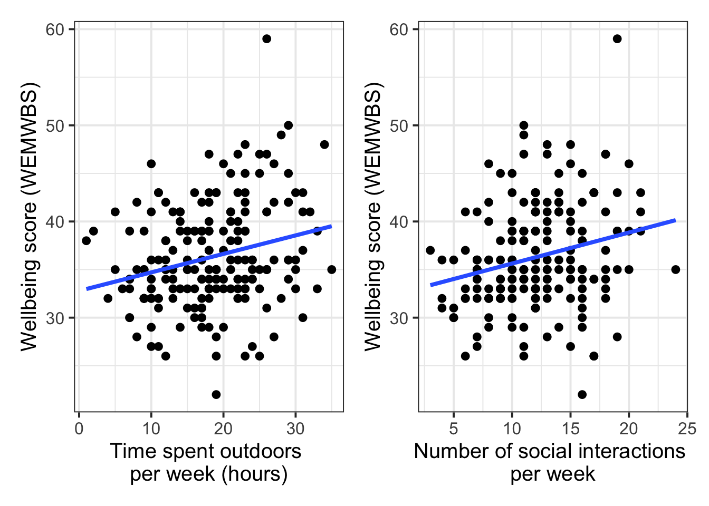
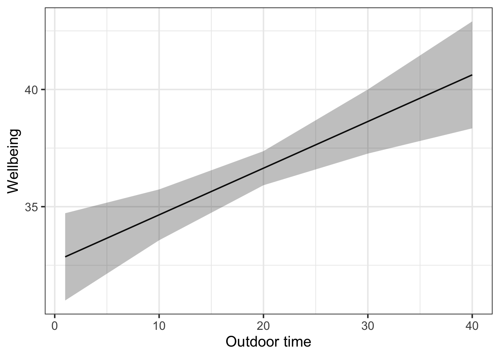

| variable | description |
|---|---|
| age | Age in years of respondent |
| outdoor_time | Self report estimated number of hours per week spent outdoors |
| social_int | Self report estimated number of social interactions per week (both online and in-person) |
| routine | Binary 1=Yes/0=No response to the question 'Do you follow a daily routine throughout the week?' |
| wellbeing | Warwick-Edinburgh Mental Wellbeing Scale (WEMWBS), a self-report measure of mental health and wellbeing. The scale is scored by summing responses to each item, with items answered on a 1 to 5 Likert scale. The minimum scale score is 14 and the maximum is 70 |
| location | Location of primary residence (City, Suburb, Rural) |
| steps_k | Average weekly number of steps in thousands (as given by activity tracker if available) |
02: Multiple regression
This week, you’ll add another predictor into the same model you fit last week. You’ll practice interpreting coefficients in this multiple regression model (i.e., a model with more than one predictor), and you’ll learn how to make a nice plot of one of the resulting model-estimated associations.
NoteGet set up
- Open RStudio.
- Create a new .Rmd file for this week’s exercises.
- Save it somewhere you can find it again.
- Give it a clear name (for example,
dapr2_lab02.Rmd). - In the first code chunk, load the packages you’ll need this week (and install them if you don’t have them already):
tidyversepatchworksjPloteffects
Research question (RQ): Is there an association between wellbeing and time spent outdoors, when controlling for the effect that social interaction has on wellbeing?
Data dictionary:
NoteMore detail about this dataset
From the Edinburgh & Lothians, 100 city/suburb residences and 100 rural residences were chosen at random and contacted to participate in the study. The Warwick-Edinburgh Mental Wellbeing Scale (WEMWBS) was used to measure mental health and wellbeing.
Participants filled out a questionnaire including items concerning: estimated average number of hours spent outdoors each week, estimated average number of social interactions each week (whether on-line or in-person), whether a daily routine is followed (yes/no). For those respondents who had an activity tracker app or smart watch, they were asked to provide their average weekly number of steps.
Read in and explore data
Question 1
Read in the data from https://uoepsy.github.io/data/wellbeing_rural.csv and store it in a variable named mwdata (“mw” stands for “mental wellbeing”).
mwdata <- read_csv("https://uoepsy.github.io/data/wellbeing_rural.csv")
Question 2
Recall our RQ: Is there an association between wellbeing and time spent outdoors, when controlling for the effect that social interaction has on wellbeing?
Identify the three relevant variables (that is, the three columns in mwdata) which we’ll use to address this question.
Produce two scatterplots, showing how each of the independent (predictor) variables is individually associated with the outcome variable. Use geom_smooth(method = 'lm', se = FALSE) to add the line of best fit to each scatterplot.
Bonus: use patchwork to create a single graphic that shows the two scatterplots beside each other.
The relevant variables in mwdata:
wellbeing: outcomeoutdoor_time: one predictorsocial_int: another predictor (included so that we can hold it constant)
wellbeing_outdoor <-
ggplot(data = mwdata, aes(x = outdoor_time, y = wellbeing)) +
geom_point() +
geom_smooth(method = "lm", se = FALSE) +
labs(x = "Time spent outdoors \nper week (hours)", y = "Wellbeing score (WEMWBS)")
wellbeing_social <-
ggplot(data = mwdata, aes(x = social_int, y = wellbeing)) +
geom_point() +
geom_smooth(method = "lm", se = FALSE) +
labs(x = "Number of social interactions \nper week", y = "Wellbeing score (WEMWBS)")# place plots adjacent to one another using notation from the `patchwork` package
wellbeing_outdoor + wellbeing_social
Question 3
When we include multiple predictors in a linear model, we want to make sure that they’re aren’t too highly correlated. (In Week 8, we’ll go into more detail about why.)
Use the cor() function to find the correlation coefficient for the correlation between the two predictor variables.
What kind of correlation does this coefficient represent?
TipCode hint
Here’s the basic usage of cor() for getting the correlation between two variables:
cor(variable1, variable2)Or, if the two variables are the only two columns in a dataframe called df:
cor(df)
There are a couple ways to get the correlation coefficient for the correlation between outdoor_time and social_int.
You might use the dollar sign notation to extract each column from mwdata:
cor(mwdata$outdoor_time, mwdata$social_int)[1] -0.03610859You might also subset mwdata using select() and then pipe the resulting two columns into cor():
mwdata |>
select(outdoor_time, social_int) |>
cor() outdoor_time social_int
outdoor_time 1.00000000 -0.03610859
social_int -0.03610859 1.00000000(This option gives you a correlation matrix. The 1s on the diagonal indicate that each variable is perfectly correlated with itself, and the off-diagonals represent the correlations between different variables.)
The correlation coefficient is –0.04, which is a small/weak negative correlation: as outdoor time increases, social interaction tends to decrease (or vice versa), but only a tiny bit.
Set up and fit linear model
Question 4
Write the mathematical model formulation for the linear model that will address our RQ.
Which \(\beta\) coefficient will we interpret in order to address our RQ about the relationship between outdoor time and wellbeing, when controlling for social interaction?
🗂️ See TODO flash cards.
\[ \text{wellbeing} = \beta_0 + (\beta_1 \cdot \text{outdoor\_time}) + (\beta_2 \cdot \text{social\_int}) + \epsilon \]
Write:
$$
\text{wellbeing} = \beta_0 +
(\beta_1 \cdot \text{outdoor\_time}) +
(\beta_2 \cdot \text{social\_int}) +
\epsilon
$$The \(\beta\) coefficient that we’ll use to address our RQ is \(\beta_1\), which is the slope of the line that associates outdoor time with wellbeing while holding social interaction constant.
Question 5
Use the function lm() to fit this linear model. Name the result mdl.
🗂️ See TODO flash cards.
mdl <- lm(wellbeing ~ outdoor_time + social_int, data = mwdata)
Look at model estimates
Question 6
Look at the model summary using summary().
Write one sentence per \(\beta\) coefficient, interpreting what each coefficient means in the context of this data and RQ.
🗂️ See TODO flash cards.
summary(mdl)
Call:
lm(formula = wellbeing ~ outdoor_time + social_int, data = mwdata)
Residuals:
Min 1Q Median 3Q Max
-15.7611 -3.1308 -0.4213 3.3126 18.8406
Coefficients:
Estimate Std. Error t value Pr(>|t|)
(Intercept) 28.62018 1.48786 19.236 < 2e-16 ***
outdoor_time 0.19909 0.05060 3.935 0.000115 ***
social_int 0.33488 0.08929 3.751 0.000232 ***
---
Signif. codes: 0 '***' 0.001 '**' 0.01 '*' 0.05 '.' 0.1 ' ' 1
Residual standard error: 5.065 on 197 degrees of freedom
Multiple R-squared: 0.1265, Adjusted R-squared: 0.1176
F-statistic: 14.26 on 2 and 197 DF, p-value: 1.644e-06- Intercept (\(\beta_0\)): The estimated wellbeing score of somebody with zero hours of outdoor time and zero social interactions per week is 28.62 points.
- Slope over
outdoor_time(\(\beta_1\)): Increasing one hour of outdoor time per week is associated with an increase in wellbeing score of 0.20 points, holding the number of weekly social interactions constant. - Slope over
social_int(\(\beta_2\)): Increasing one social interaction per week is associated with an increase in wellbeing score of 0.33 points, holding the number of outdoor hours constant.
(Remember to name the units after you’ve given the number! That is, write “28.62 points” and not just “28.62”.)
Question 7
Now you’ll use a function called tab_model() to create a pretty-printed table of coefficient estimates. It comes from the package sjPlot.
Run the following code:
tab_model(mdl)Caution: tab_model() is very nice, but if you include it in an Rmd file which you then want to knit to PDF, it will cause knitr to crash. So it’s best to use tab_model() only in Rmd files that you want to knit to HTML. If you need to knit to PDF, then you can recreate the output of tab_model() manually.
🗂️ See TODO flash cards.
tab_model(mdl)| wellbeing | |||
|---|---|---|---|
| Predictors | Estimates | CI | p |
| (Intercept) | 28.62 | 25.69 – 31.55 | <0.001 |
| outdoor time | 0.20 | 0.10 – 0.30 | <0.001 |
| social int | 0.33 | 0.16 – 0.51 | <0.001 |
| Observations | 200 | ||
| R2 / R2 adjusted | 0.126 / 0.118 | ||
Question 8
Here you’ll try out a new function called effect(), from the package effects. It’s like broom::augment() from last week, in that it gives you model-predicted values. But it’s different because it lets you choose one variable in particular whose effect you’d like to plot—which is what we want, because our RQ is asking specifically about the effect of outdoor_time, holding social interaction constant. It also gives you the lower and upper bounds of the 95% CI that surrounds the model-estimated line, which is important for plotting.
Run the following code to see the estimated wellbeing scores (in fit) for different values of outdoor_time, as well as the lower and upper bounds of the 95% CI (in lower and upper respectively). Write a sentence or two to explain to yourself what each row of this output represents.
effects::effect(term = 'outdoor_time', mod = mdl) |>
as.data.frame()Now run the following code to generate a plot showing the association between outdoor_time and wellbeing, holding social_int constant.
effects::effect(term = 'outdoor_time', mod = mdl) |>
as.data.frame() |>
ggplot(aes(x = outdoor_time, y = fit)) +
geom_line() +
geom_ribbon(aes(ymin = lower, ymax = upper), alpha = 0.3) +
labs(
x = 'Outdoor time',
y = 'Wellbeing'
)(If you’re not sure what one of the lines of this code does, then comment it out and run the rest of the code again. Pay attention to what changes.)
Based on this plot and the relevant model coefficient you identified above, how would you respond to the RQ?
🗂️ See TODO flash cards.
effects::effect(term = 'outdoor_time', mod = mdl) |>
as.data.frame() outdoor_time fit se lower upper
1 1 32.85963 0.9436601 30.99866 34.72060
2 10 34.65148 0.5502067 33.56643 35.73653
3 20 36.64242 0.3688723 35.91497 37.36986
4 30 38.63336 0.6938447 37.26505 40.00168
5 40 40.62431 1.1570603 38.34249 42.90612Each row contains the fitted estimates, SE of that estimate, and the lower and upper bounds of the 95% CI for different values of outdoor_time.
effects::effect(term = 'outdoor_time', mod = mdl) |>
as.data.frame() |>
ggplot(aes(x = outdoor_time, y = fit)) +
geom_line() +
geom_ribbon(aes(ymin = lower, ymax = upper), alpha = 0.3) +
labs(
x = 'Outdoor time',
y = 'Wellbeing'
)
This plot shows a positive association between outdoor time and wellbeing: people with more outdoor time are estimated to have higher wellbeing scores. And the \(\beta\) coefficient that quantifies the slope of this line is also positive at 0.20. Therefore I’d conclude that yes, there seems to be a positive association between wellbeing and time spent outdoors, controlling for the effect that social interaction also has on wellbeing.
(Next week, we’ll learn how to report the corresponding significance test!)
Use the model to make predictions
Question 9
Take the coefficients estimated in mdl, rounded to two decimal points, and substitute them appropriately into the mathematical model expression you wrote in Q4.
🗂️ See TODO flash cards.
\[ \text{wellbeing} = 28.62 + (0.20 \cdot \text{outdoor\_time}) + (0.33 \cdot \text{social\_int}) + \epsilon \]
Write:
$$
\text{wellbeing} = 28.62 +
(0.20 \cdot \text{outdoor\_time}) +
(0.33 \cdot \text{social\_int}) +
\epsilon
$$
Question 10
Last week, you used your linear expression to reconstruct the estimated wellbeing score of somebody whose data we observed (the person whose data was in the third row of mwdata).
Finally, this week, you’ll use the linear expression you wrote in Q9 to predict wellbeing scores for people that we haven’t observed any data from.
Calculate the wellbeing scores of the following three people (remember you can use the R console as a calculator):
- Shuting:
- Outdoor time = 36 hours
- Social interactions = 19
- Fatima:
- Outdoor time = 20 hours
- Social interactions = 15
- Donna:
- Outdoor time = 1 hour
- Social interactions = 7
Who has the highest predicted wellbeing score? Who has the lowest?
🗂️ See TODO flash cards.
For Shuting:
\[ \begin{align} \text{wellbeing}_{\text{Shuting}} &= 28.62 + (0.20 \cdot 36) + (0.33 \cdot 19) \\ &= 42.09 \\ \end{align} \]
Write:
\begin{align}
\text{wellbeing}_{\text{Shuting}} &= 28.62 + (0.20 \cdot 36) + (0.33 \cdot 19) \\
&= 42.09 \\
\end{align}For Fatima:
\[ \begin{align} \text{wellbeing}_{\text{Fatima}} &= 28.62 + (0.20 \cdot 20) + (0.33 \cdot 15) \\ &= 37.57 \\ \end{align} \]
For Donna:
\[ \begin{align} \text{wellbeing}_{\text{Donna}} &= 28.62 + (0.20 \cdot 1) + (0.33 \cdot 7) \\ &= 31.13 \\ \end{align} \]
Shuting has the highest predicted wellbeing score at 42.09, and Donna has the lowest at 31.13.